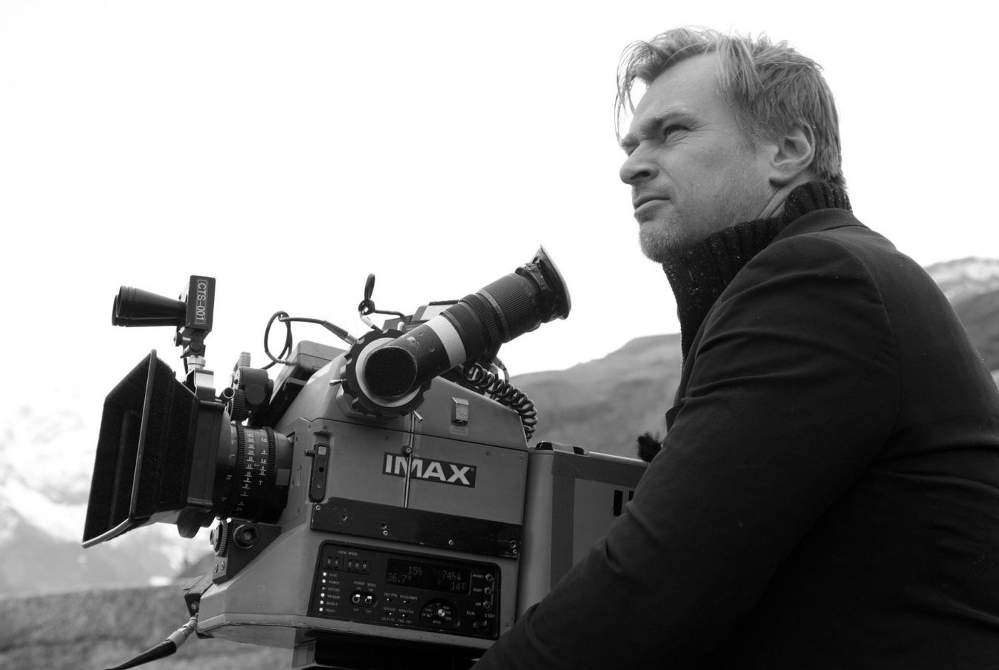

Christopher Nolan - The film-maker of tomorrow

A picture from the sets of Dunkirk
Overview
Born: July 30, 1970 in London, England, UK
Full Name: Christopher Edward Nolan
Nickname: Chris
Height: 5' 11¼" (1.81 m)
A summary of his career:
- Known for making lucrative Hollywood blockbusters with complex storytelling, Nolan is regarded as an influential filmmaker of the 21st century.
- His films have grossed more than US$5.7 billion worldwide and have garnered 11 Academy Awards from 36 nominations.
- Having received many awards and honours, he was listed in 2015 as one of the 100 most influential people in the world by Time.
- Nolan's work regularly feature in listings of the best films of the 21st century. They are typically characterised by existentialism and epistemology.
- His work is permeated with mathematically inspired images and concepts, unconventional narrative structures, practical special effects, experimental soundscapes, large-format film photography, and materialistic perspectives.
- He has co-written several of his films with his brother Jonathan, and runs the production company Syncopy Inc. with his wife Emma Thomas.